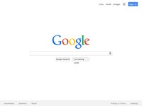

JULES FAGAN
bringing your design to life
-
- Hot OR Cold (PHP Version)
- Description: This classic game is built upon php and utilizes responsive design techniques so it can fit on your mobile device. Try to guess the number and this game will tell you whether or not your guess was close (hot) or far off (cold). This version of the game will also display the games status at the bottom.
- Languages: HTML, CSS, PHP
- Techniques: Used responsive design techniques so it can be played on a mobile phone.
- Link: http://www.julesfagan.com/portfolio/hot-or-cold-php-version/
-
- HOT OR COLD (jQuery/JavaScript Version)
- Description: Template provided by Thinkful and was modified to not only include the main jQuery functionality for our guessing game but to also include a points scoring system thereby adding a little difficulty and pressure as well.
- Languages: HTML, CSS, jQuery
- Techniques: e.preventDefault() used in the right places
- Link: http://julesfagan.github.io/hot-or-cold-starter/
-
- JSON Table Creator
- Description: This application will take a JSON file in the appropriate format and display it in a table format having each column sortable. Here we have a basic example of how this code could be applied to the core of a real estate website.
- Languages: HTML, CSS, JavaScript, jQuery, Ajax, JSON, PHP, MySQL
- Techniques: Used Ajax in combination with PHP to make things a little quicker.
- Link: http://www.julesfagan.com/portfolio/examplerealestate/
-
- Example MySQL Queries
- Description: This application allows a user to select from a certain set of queries. The queries are then returned back to the user in the form of a table. This website utilizes the MySQL Sample Database from mysqltutorial.org.
- Languages: HTML, CSS, PHP, MySQL
- Techniques: Basic user data filtering and MySQL queries
- Link: http://www.julesfagan.com/portfolio/example-mysql-queries/index.php
-
- Example PDO Login
- Description: This application simulates a user login. This login filters and cleans the user input to help prevent against SQL injections. The users data is stored in session and the user also has the option for their username to be stored in a cookie for a certain length of time.
- Languages: HTML, CSS, PHP (Object-Oriented), PDO, MySQL
- Techniques: Object Oriented PHP using PDO
- Link: http://www.julesfagan.com/portfolio/example-pdo-user-login/login.php
-
- FIZZ BUZZ
- Description: A demonstration of using controls as well as the "mod" operater in javascript. This will show "fizz" for any number divisible by 3, and "buzz" for any number divisible by 5, and "fizz buzz" for any number divisible by both 3 and 5.
- Languages: HTML, CSS, JavaScript, jQuery
- Techniques: Normal control loops along with "mod" operator.
- Link: http://julesfagan.github.io/fizzbuzz-refactor/
-
- CHECKLIST TALLY 2.0
- Description: Created from scratch, this shopping list app will keep track of not just the items you want to purchase but can also be used to create projects and tasks. This app which utilizes and a series of HTML5 data attributes in conjunction with the jQuery data function can also be expanded into a note-taking application as well. Semantic markup included.
- Languages: HTML, CSS, jQuery
- Techniques: None
- Link: http://julesfagan.github.io/shopping-list-app/
-
- HEALTH QUIZ
- Description: Created from scratch this quiz aims to test your knowledge on the various areas of nutrition and health. The application utilizes an array of objects to store various questions.
- Languages: HTML, CSS, jQuery
- Techniques: Object Oriented JavaScript
- Link: http://julesfagan.github.io/quiz-app/
-
- SHULTZ AND ASSOCIATES
- Description: A fictitious business website that demonstrates some CSS techniques such as use of the "sticky footer" as well as various shapes and rolloevers.
- Languages: HTML, CSS
- Techniques: CSS sticky footer, rounded corners, and rollovers.
- Link: http://julesfagan.github.io/shultz_and_associates/
-

- GOOGLE CLONE
- Description: An attempt at mimicking the famous Google website (non-working version of course). Also a real lesson on positioning.
- Languages: HTML, CSS
- Techniques: Psuedo-classes, box shadows, positioning.
- Link: http://julesfagan.github.io/google-clone/
-
- SAMPLE RESUME
- Description: A resume template that can be used by anyone to display their skills and more. This resume has a fixed header with rounded boxes.
- Languages: HTML5, CSS
- Techniques: None.
- Link: http://julesfagan.github.io/html-resume/
-
- STREET FIGHTER
- Description: Watered down version of the famous game from years ago. This game give Ryu the ability to throw a haduken, give a cool pose, or to just hang out in the ready position.
- Languages: HTML5, CSS, jQuery
- Techniques: None
- Link: http://julesfagan.github.io/jquery-streetfighter/main.html
-
- VIDEO TRAVEL GUIDE
- Description: This simple application will allow you to type in and search for any country, city, state, etc. Clicking the search button will return all related YouTube videos.
- Languages: HTML5, CSS, jQuery, Ajax
- Techniques: None
- Link: http://julesfagan.github.io/video-travel-guide/